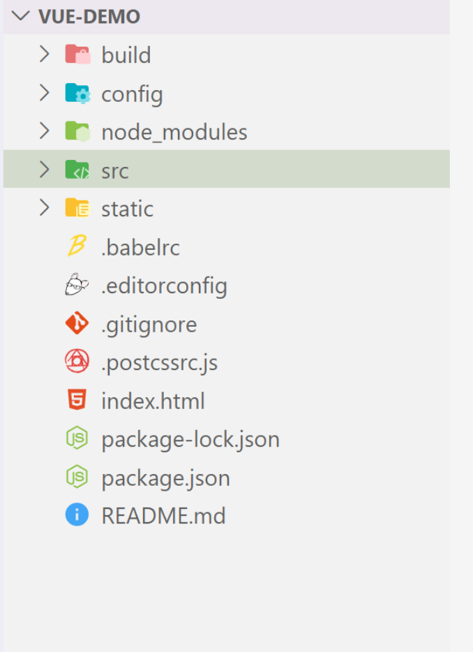

新建一个vue项目
一、安装node环境
二、搭建vue项目环境
1.全局安装vue-cli
1 | |
2.创建一个基于 webpack 模板的新项目
1 | |

说明：
Vue build ==> 打包方式，回车即可；
Install vue-router ==> 是否要安装 vue-router，项目中肯定要使用到 所以Y 回车；
Use ESLint to lint your code ==> 是否需要 js 语法检测 目前我们不需要 所以 n 回车；
Set up unit tests ==> 是否安装 单元测试工具 目前我们不需要 所以 n 回车；
Setup e2e tests with Nightwatch ==> 是否需要 端到端测试工具 目前我们不需要 所以 n 回车；
3.安装依赖
1 | |
4、npm run dev，启动项目
三、vue项目目录讲解

1、build：构建脚本目录
1）build.js ==> 生产环境构建脚本；``
2）check-versions.js ==> 检查npm，node.js版本；
3）utils.js ==> 构建相关工具方法；
4）vue-loader.conf.js ==> 配置了css加载器以及编译css之后自动添加前缀；
5）webpack.base.conf.js ==> webpack基本配置；
6）webpack.dev.conf.js ==> webpack开发环境配置；
7）webpack.prod.conf.js ==> webpack生产环境配置；
2、config：项目配置
1）dev.env.js ==> 开发环境变量；
2）index.js ==> 项目配置文件；
3）prod.env.js ==> 生产环境变量；
3、node_modules：npm 加载的项目依赖模块
4、src：这里是我们要开发的目录，基本上要做的事情都在这个目录里。里面包含了几个目录及文件：
1）assets：资源目录，放置一些图片或者公共js、公共css。这里的资源会被webpack构建；
2）components：组件目录，我们写的组件就放在这个目录里面；
3）router：前端路由，我们需要配置的路由路径写在index.js里面；
4）App.vue：根组件；
5）main.js：入口js文件；
5、static：静态资源目录，如图片、字体等。不会被webpack构建
6、index.html：首页入口文件，可以添加一些 meta 信息等
7、package.json：npm包配置文件，定义了项目的npm脚本，依赖包等信息``
8、README.md：项目的说明文档，markdown 格式
9、.xxxx文件：这些是一些配置文件，包括语法配置，git配置等
//原文中包含vue基本用法